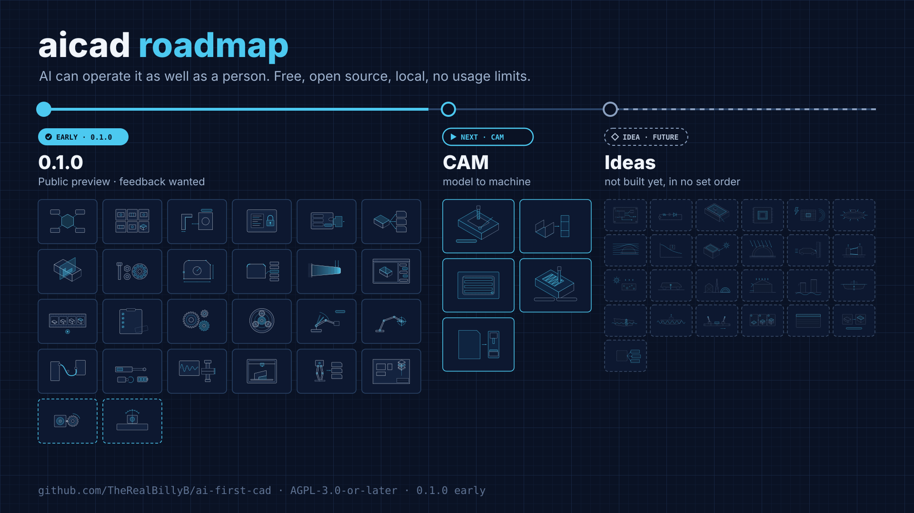

ai-first-cad · roadmap
CAD an AI can operate as well as a person.
Free, open source, runs on your own computer, no usage limits. Version 0.1.0 is the first public early release, not the finished 1.0. It works for real designs, but expect rough edges, missing features, and performance gaps. Try it and tell us what was confusing so the next version is easier to use.
Feedback wanted. Model and Assembly now share one workspace and one 3D view. For 1.0, we plan in-place part editing and a smoother assembly flow, shaped by what you try to build. Share feedback. Please leave out personal information, API keys, and private design files.
- Done in the repository
- Before 1.0
- Next: CAM
- Idea, not built yet

0.1.0 early release
What's in the 0.1.0 early release
These capabilities are in the repository today. Model and Assembly share one workspace; the assembly flow still needs polish before 1.0.
Next
CAM: from model to machine
The first track after 1.0. Toolpaths will come from an existing open-source engine rather than a new one (none is chosen yet). 3D printing stays with PrusaSlicer and OrcaSlicer.
Future
Ideas board
Things we would like to build. None of these exist yet, they are in no set order, and they may change.
Electronics
Analysis and testing
Construction and architecture
Marine
Robotics
App and documents
No items match.